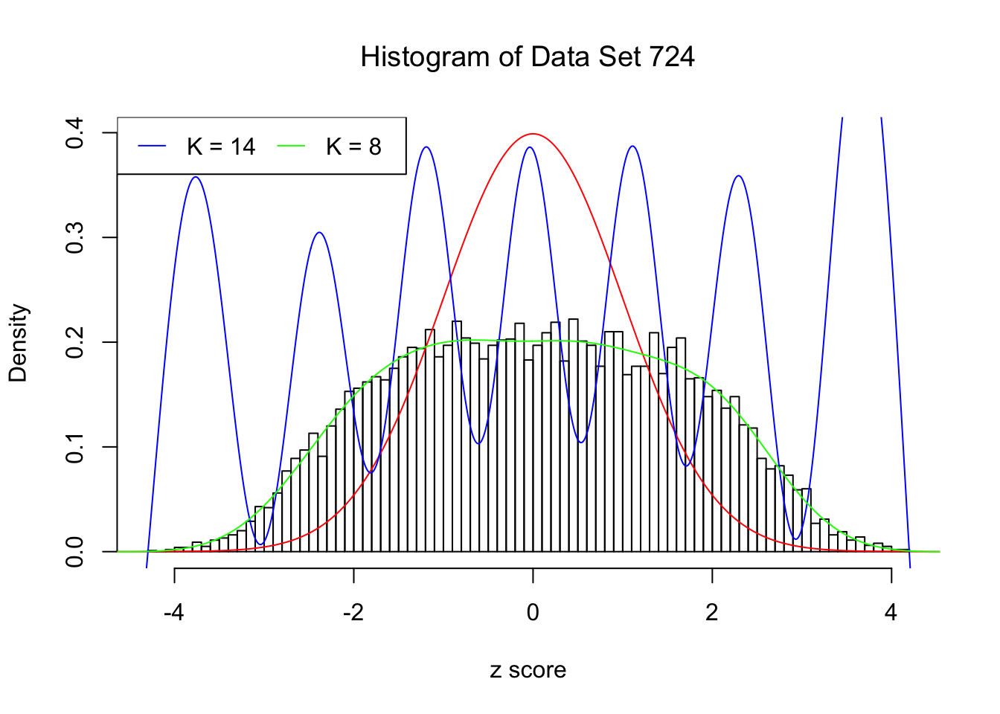
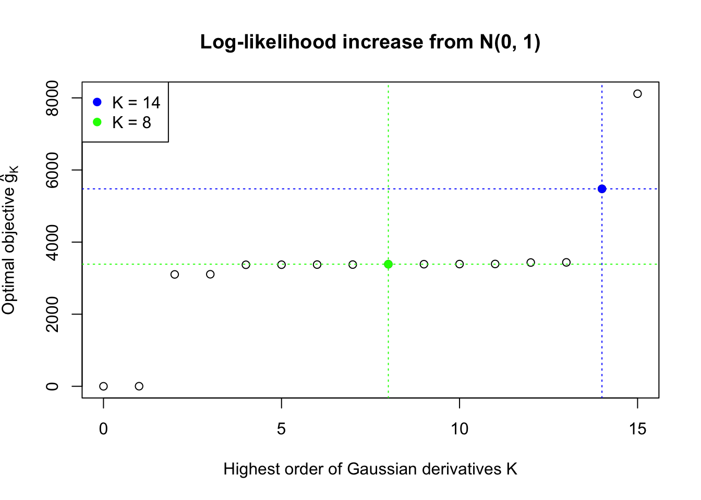
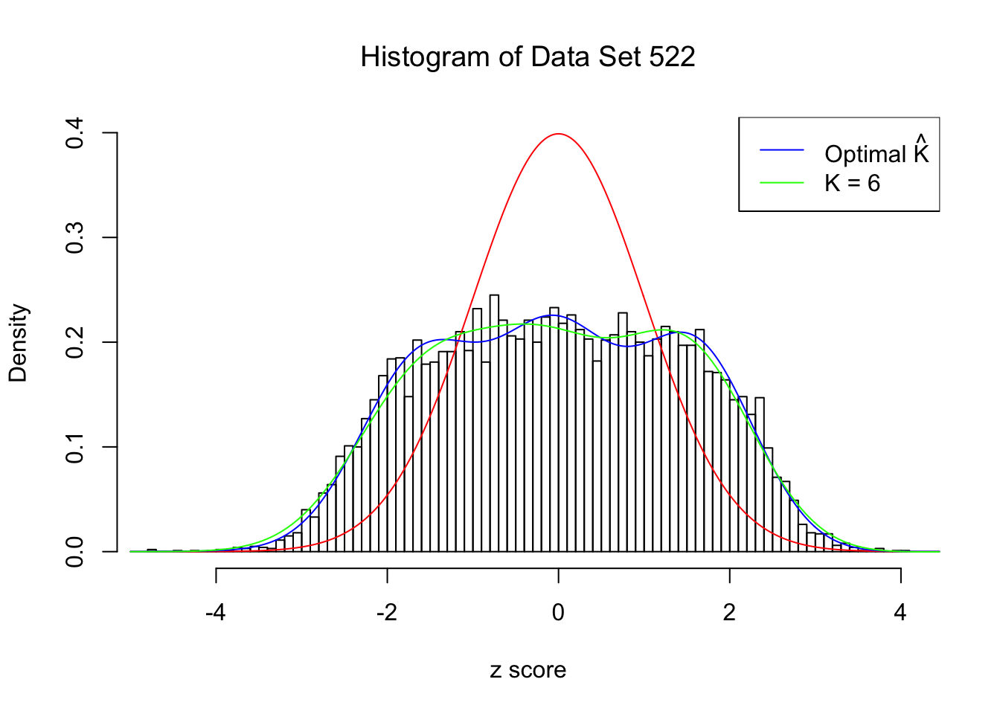
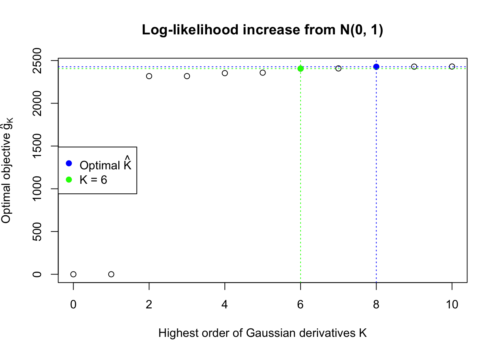

Things can go wrong in choosing the optimal \(\hat K\). We are using an automated rule, yet sometimes the objective (log-likelihood) could fail to pass the optimal criterion before the optimization becomes unstable.
Recall that we make two key assumptions to make the problem tractable. In place of the original second constraint of non-negativity, we use \(n\) observed \(z\) scores instead of all \(x\in\mathbb{R}\). Therefore, when \(K\) gets larger, and the higher order Gaussian derivatives involved get more complicated, it’s possible that the optimal solution will satisfy the non-negativity constraint for all \(n\) observed \(z\) scores, but not the whole real line. This issue also happens to some well-behaved examples if looked closely.
Meanwhile, sometimes an optimal \(\hat K\) can be found according to the rule, but it looks like overfitting. A \(K < \hat K\) appears better.
Here we have two examples.
source("../code/ecdfz.R")z = read.table("../output/z_null_liver_777.txt")
p = read.table("../output/p_null_liver_777.txt")library(ashr)
DataSet = c(522, 724)
res_DataSet = list()
for (i in 1:length(DataSet)) {
zscore = as.numeric(z[DataSet[i], ])
fit.ecdfz = ecdfz.optimal(zscore)
fit.ash = ash(zscore, 1, method = "fdr")
fit.ash.pi0 = get_pi0(fit.ash)
pvalue = as.numeric(p[DataSet[i], ])
fd.bh = sum(p.adjust(pvalue, method = "BH") <= 0.05)
res_DataSet[[i]] = list(DataSet = DataSet[i], fit.ecdfz = fit.ecdfz, fit.ash = fit.ash, fit.ash.pi0 = fit.ash.pi0, fd.bh = fd.bh, zscore = zscore, pvalue = pvalue)
}library(EQL)
x.pt = seq(-5, 5, 0.01)
H.pt = sapply(1:15, EQL::hermite, x = x.pt)Data Set 724 : Number of BH's False Discoveries: 79 ; ASH's pihat0 = 0.01606004
In this example the automated rule fails to find an optimal \(\hat K\). Note that the fitted log-likelihood increased until seemingly reached a plateau, but didn’t quite make the cut. After that, as \(K\) keeps getting larger, the optimization becomes unstable. The blue \(K = 14\) line obviously breaks the non-negativity constraint for \(x \neq z_i\), the \(n\) observed \(z\) scores.
Data Set 522 : Number of BH's False Discoveries: 4 ; ASH's pihat0 = 0.02083846
In this example the automated rule is able to find an optimal \(\hat K = 8\). However, the green \(K = 6\) lines seems better visually. Their difference in the fitted log-likelihood is very small, although larger than what the rule requires.
Things can go very wrong when the number of fitted Gaussian derivatives \(K\) is too large, and it implies that we cannot blindly fit ever growing \(K\) and hope the fitted log-likelihood converges. On the other hand, the good news is oftentimes we can still reach a pattern of increasing log-likelihoods, which gives a reasonable \(K\), before the optimization becomes unstable, although it might be not the optimal \(K\) we would find by the current log-likelihood ratio test motivated rule.
sessionInfo()R version 3.3.2 (2016-10-31)
Platform: x86_64-apple-darwin13.4.0 (64-bit)
Running under: macOS Sierra 10.12.3
locale:
[1] en_US.UTF-8/en_US.UTF-8/en_US.UTF-8/C/en_US.UTF-8/en_US.UTF-8
attached base packages:
[1] stats graphics grDevices utils datasets methods base
other attached packages:
[1] cvxr_0.0.0.9009 EQL_1.0-0 ttutils_1.0-1
loaded via a namespace (and not attached):
[1] Rcpp_0.12.10 lattice_0.20-34 digest_0.6.11 rprojroot_1.2
[5] MASS_7.3-45 grid_3.3.2 backports_1.0.5 magrittr_1.5
[9] evaluate_0.10 stringi_1.1.2 Matrix_1.2-7.1 rmarkdown_1.3
[13] tools_3.3.2 stringr_1.2.0 yaml_2.1.14 htmltools_0.3.5
[17] knitr_1.15.1 This R Markdown site was created with workflowr